SIRADAKİ MAÇ HAFTASI
ŞAMPİYONLAR LİGİ · 2026/27
—GÜN

ŞAMPİYONLAR LİGİ · 2026/27
Toplam tahmin
0Kaydedilen tahminDoğru
00 sonuçlanmış tahmindenYanlış
00 değerlendirilmiş tahmindenBekleyen
0Henüz sonucu girilmemiş maçlardaPUAN SIRALAMASI
MAÇ SONUÇLARI
2026/27 · SIRALAMA
| Sıra | Katılımcı | Puan | Doğru | Başarı | Son 5 maç | Rozet koleksiyonu |
|---|
FİKSTÜR · 2026/27
ŞAMPİYONLAR LİGİ
2026/27 · SEZON RAPORU
Sonucu girilen maç
0 / 16KarşılaşmaToplam tahmin
0Kaydedilmiş seçimDoğru
0Sonucu girilmiş tahminYanlış
0Sonucu girilmiş tahminBekleyen
0Maç sonucu bekleniyorGenel isabet
—Değerlendirilen tahmin yokTAKIM SONUÇLARI
TAHMİN DAĞILIMI
MAÇ BAZINDA
BİREYSEL PERFORMANS
YÖNETİM ALANI
Girilen sonuçlar puanları ve bütün istatistikleri otomatik yeniler.
SONUÇ GİRİŞİ
SONUÇ GİRİŞİ